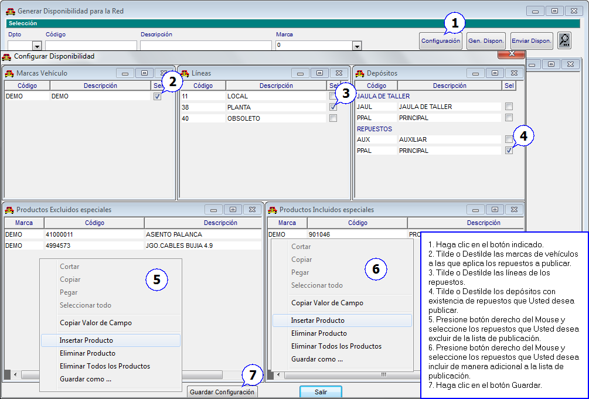
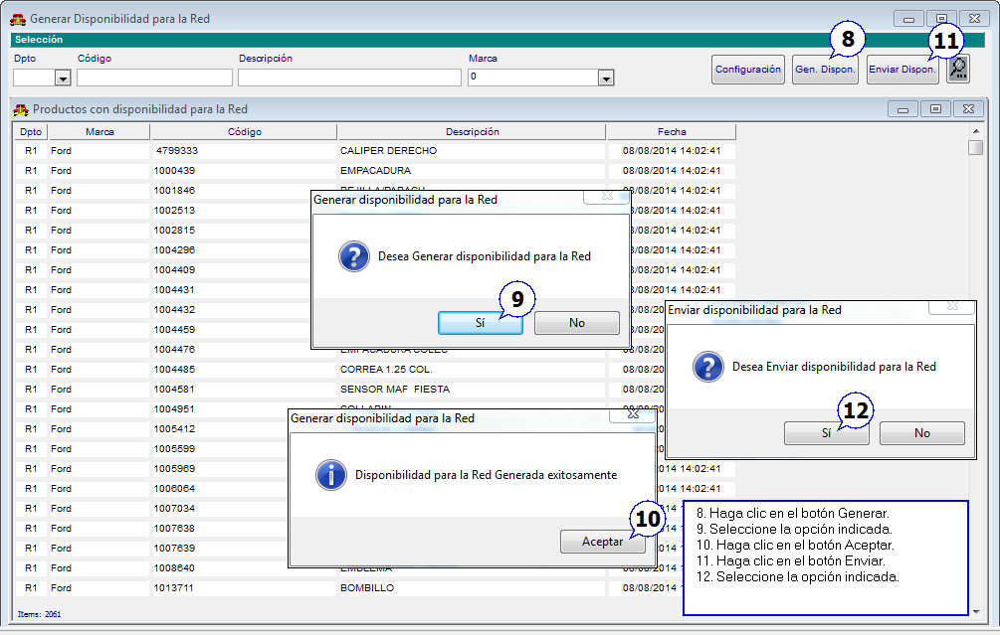
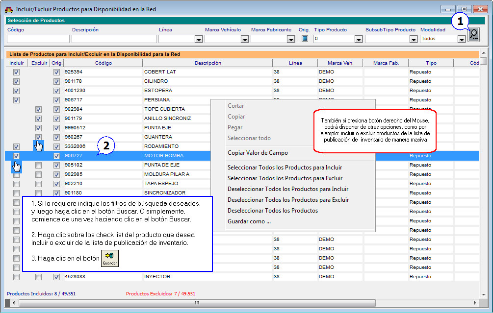
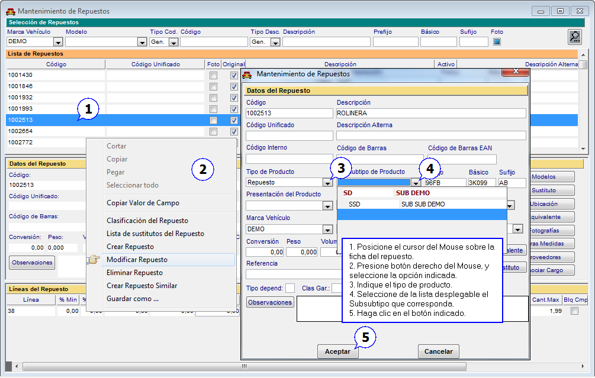
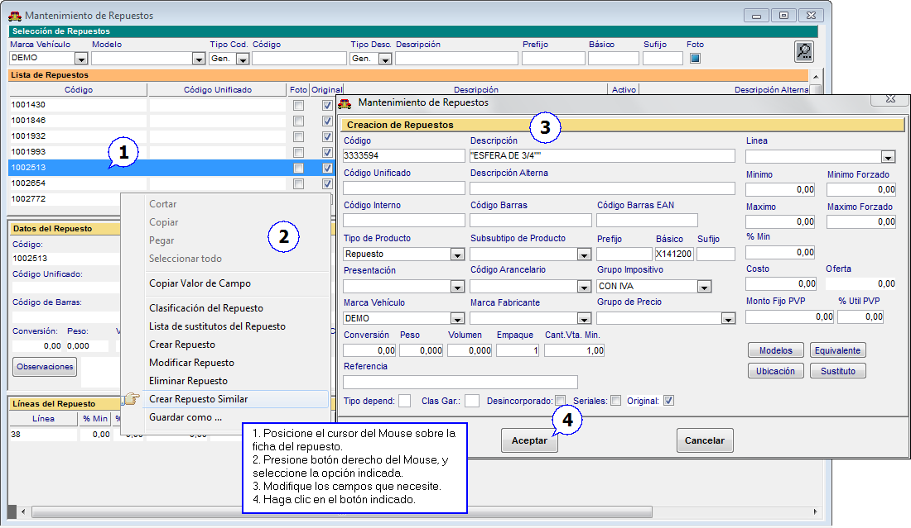
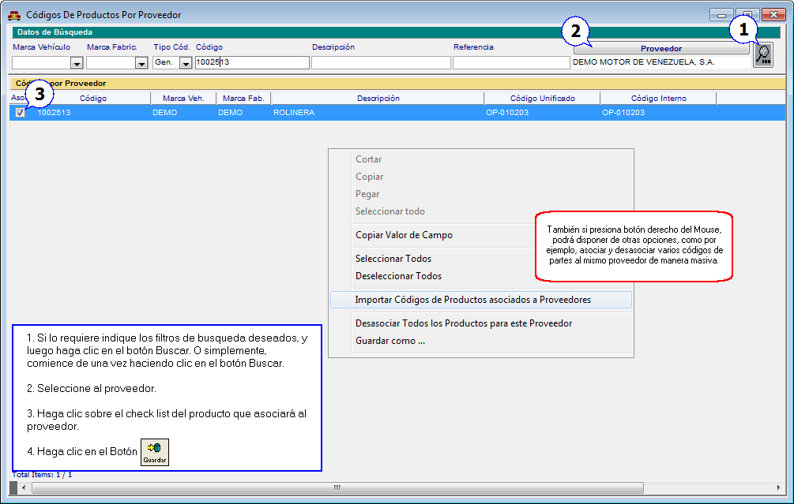
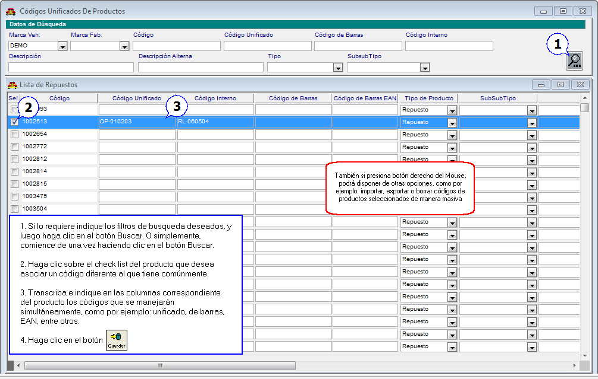
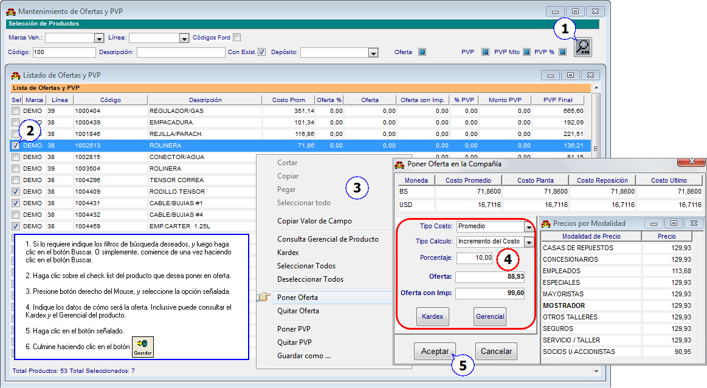
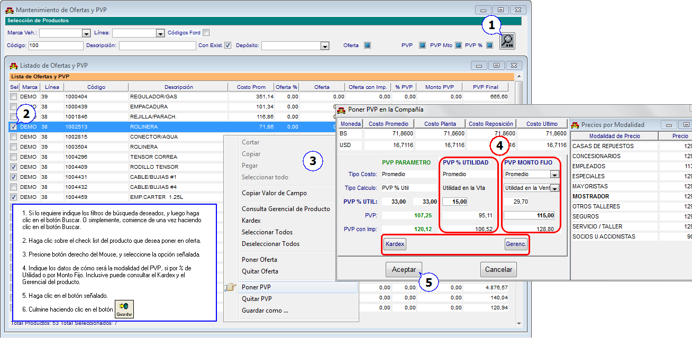
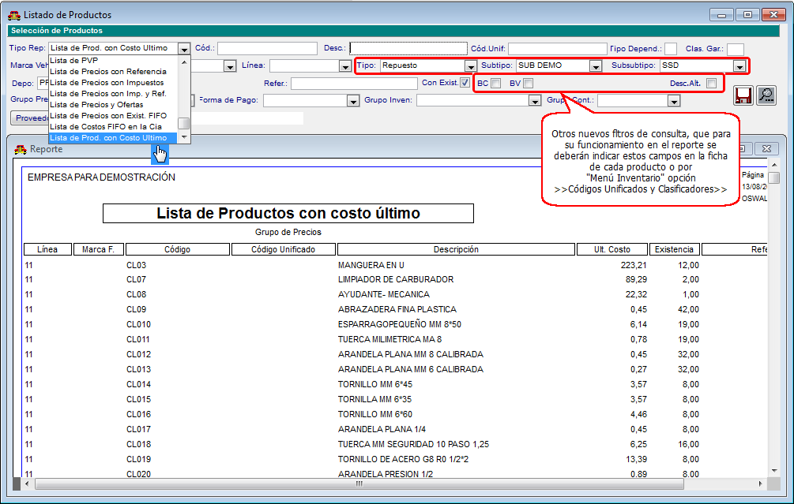

|
Menú Inventario |
  
|
|
Menú Inventario |
|
Desde el Módulo de Repuestos "Menú Inventario" opción >>Publicación de Inventario>>Generar Disponibilidad para la Red>>, podrá dar a conocer la existencia de sus productos a todos los concesionario de la misma marca a nivel nacional de manera automática.
Figura. Configurar Disponibilidad de Inventario

Figura. Generar y Enviar Disponibilidad de Inventario

Consideraciones Importantes Para la Publicación de Inventario
| 1. | La publicación de inventario será un servicio por suscripción disponible sólo para aquellos clientes que lo soliciten, por ello deberá contactar a nuestras oficinas. |
| 2. | Antes de configurar la publicación de inventario deberá indicar en el "Menú General" por la opción >>Departamentos por Compañía>>, los nombres y apellidos, números telefónicos y direcciones e-mail de las personas contactos en el concesionario. |
| 3. | Las dos (2) condiciones necesarias para la publicación de inventario es que las partes o piezas tengan asignada la ubicación, y que tengan existencia. |
| 4. | La publicación sólo se puede hacer desde el equipo que funciona como "Servidor", o lo que es lo mismo, dónde se encuentra el manejador de la base de datos. Además, es de carácter obligatorio que el setup o instalador de Infoauto tenga la ubicación "C:\infoauto", de lo contrario no funciona. |
| 5. | Luego de enviarse la publicación de inventario la primera vez, de manera automática se podrá enviar una publicación cada 1/2 hora (30 minutos). |
| 6. | Si Usted desea incluir o excluir productos masivamente de la lista de publicación de inventario podrá hacerlo en el "Menú Inventario" opción >>Publicación de Inventario>>Incluir/Excluir Productor para Disponibilidad en la Red>>. |
Figura. Incluir/Excluir Productos para Disponibilidad en la Red

Desde el Módulo de Repuestos "Menú Inventario" opción >>Ficha de Repuestos>>, podrá indicar el subtipo y el subsubtipo según el tipo de repuesto. La activación del tipo de repuestos, y la creación del subtipo u subsubtipo de repuestos lo podrá hacer en "Menú General" opción >>Tablas Básicas>>.
Figura. Subsubtipo de Repuestos

Repuestos Con Características Similares
Desde el Módulo de Repuestos "Menú Inventario" opción >>Ficha de Repuestos>>, podrá crear nuevos repuestos desde la ficha de un repuesto ya registrado, sólo deberá cambiar los datos que se requieran para identificar al nuevo producto.
Figura. Repuesto Similar

Desde el Módulo de Repuestos "Menú Inventario" opción >>Códigos de Productos por Proveedor>>, ahora podrá asociar los códigos de cada producto por cada uno de los códigos que manejan los proveedores.
Figura. Asociar Códigos por Proveedor

Desde el Módulo de Repuestos "Menú Inventario" opción >>Códigos Unificados y Clasificadores>>, ahora podrá asociar a cada producto un código unificado diferente al código que comúnmente tiene. Así como puede manejar un código unificado, podrá manejar otros códigos, tales como: código interno, código de barras y código EAN, e inclusive descripción alterna del producto.
Figura. Asociar Códigos Unificados

Desde el Módulo de Repuestos "Menú Inventario" opción >>Mantenimiento de Ofertas y PVP>>, podrá colocar oferta a los productos al especificar alguno de los tipo de costo (Ej:planta, reposición, promedio, último, etc), y algún porcentaje de cálculo basado en las fórmulas de precio y costo (descuento sobre pvp, incremento del costo y utilidad en la venta).
Figura. Oferta de Productos

Desde el Módulo de Repuestos "Menú Inventario" opción >>Mantenimiento de Ofertas y PVP>>, al igual que las ofertas podrá colocar a los productos un precio diferente a lo indicado en tipo de costo y fórmula de precio y costo de la modalidad de precios.
Figura. PVP de Productos

Desde el Módulo de Repuestos "Menú Inventario" opción >>Reportes>>Listados y Consultas, podrá consultar las existencias de productos con nuevos filtros de consulta, uno de ellos es el "Costo Último".
Figura. Listado de Productos con Costo Último

Volver a Índice de Módulo Administrativo
Volver al Índice de Módulos Operativos